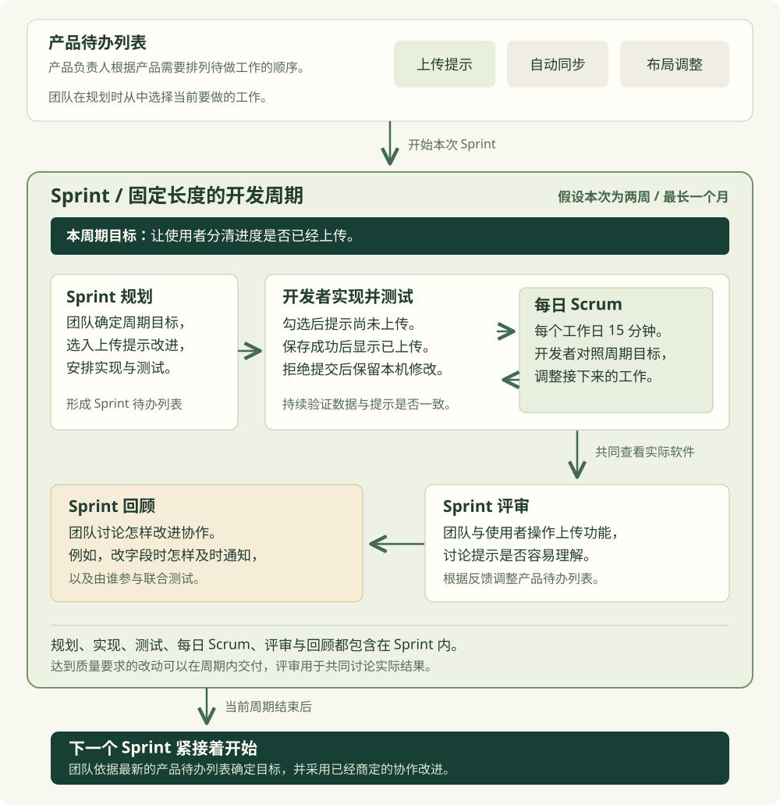

上一节中，我们把复习清单的使用需要整理成了具体行为与验收条件。团队现在已经记录了上传状态提示、上传预览和自动同步等改动，还需要决定当前投入哪项工作，以及怎样让相关开发者共同完成。
假设我们准备优先实现上传状态提示。当前页面只显示本机完成数量，使用者容易把勾选理解成已经上传。因此，团队希望先帮助使用者分清哪些修改仍留在设备上，哪些已经保存到服务端。上传预览与自动同步继续保留在后续工作中。
Scrum提供了团队共同安排工作的框架。团队在称为 Sprint 的固定周期内围绕目标开发，每个周期最长为一个月。周期包含规划、实现与测试，也包含共同评审软件和改进协作的活动。《Scrum 指南》对这些活动与相互关系作了规定。
对于复习清单，我们可以把持续发展的目标写为“让使用者在电脑与手机之间继续复习，并保留需要的进度”。这个关于产品以后要达到什么状态的目标称为产品目标。当前的提示改进、预览和自动同步，都需要根据是否有助于这个目标判断优先级。
团队将准备改进的工作按顺序记录在产品待办列表中。列表可以随着实际反馈更新。例如，使用者说明自己经常忘记上传以后，团队可以提高提示改进的顺序；如果使用者已经理解提示，却仍觉得手动上传繁琐，就需要继续讨论自动同步。
Scrum 规定了三类职责。产品负责人负责产品价值与待办工作的排序，需要结合使用需要判断当前投入什么。开发者负责完成能够使用的软件，包括实现与测试。Scrum Master帮助团队理解并有效采用框架，推动处理妨碍团队协作的问题。《Scrum 指南》的团队职责说明给出了相应要求。
这些职责需要在团队中有人实际承担。我们负责网页，合作者负责服务端，双方共同参与实现与测试。团队还要明确由谁根据使用需要安排优先级，以及遇到协作阻碍时由谁帮助推动处理。记录职责时，应依据实际分工填写。
假设团队将本次 Sprint 定为两周，在开始时举行 Sprint 规划。团队讨论本周期为什么值得投入，确定目标为“让使用者分清本机进度是否已经上传”。随后，开发者结合可投入时间选择支持这个目标的工作，并安排怎样完成。
当前可以选入“上传结果提示”这项完整改动。开发任务可以拆为待上传提示、成功提示、拒绝提交后的状态保留，以及相应测试。这些任务共同支持当前改动，提供给使用者的版本仍需要满足整项工作的验收条件。
本周期目标、选入的工作，以及开发者准备采用的实现计划，共同形成 Sprint 待办列表。对于当前项目，计划需要说明我们何时准备好网页，合作者提供什么返回结果，以及双方怎样验证代码配合。它可以随着开发中取得的新信息更新。
团队还需要约定共同采用的完成标准，英文为 Definition of Done。例如，相关代码已经配合运行，约定检查已经通过，对应代码版本与运行结果已经保留。开发者依据这些共同要求判断改动是否已经达到可使用的状态。
上一节的验收条件说明本项功能具体要怎样工作。例如，提交被拒绝时，本机修改需要保留。完成标准则记录团队对已经完成的软件共同采用的要求。上传提示达到共同标准以前，发现的错误仍需要继续修复。
周期中如果发现安排的工作做不完，开发者可以与产品负责人协商具体范围，同时保护本周期目标和质量要求。例如，本来还想调整按钮位置，现在预计来不及，就可以讨论推迟这项工作。拒绝提交时显示上传成功，会使使用者继续误判进度，影响当前目标，因此需要修复。
开发期间，开发者在每个工作日举行 每日 Scrum，用 15 分钟对照周期目标调整接下来的安排。例如，我们发现提示代码需要等待合作者调整返回字段，就需要与合作者确认何时能够采用新字段。如果预计来不及，双方可以讨论是否沿用当前字段完成提示，将字段改名推迟到后续开发。
日常交流也需要推动实际处理。如果服务端测试环境无法访问，相关开发者就要查看启动情况与访问地址，并确定由谁排查。确定处理办法以后，负责网页的开发者才有依据安排联合测试。讨论需要影响随后的工作，才能帮助团队继续接近周期目标。
代码准备好以后，双方需要运行正常上传与拒绝提交。使用者在电脑上勾选“课堂笔记”但尚未上传时，共享记录应保持未完成。上传成功以后，共享记录才应保存已完成。旧版本提交被拒绝时，本机勾选需要保留，页面还要说明修改尚未上传。
周期接近结束时，团队与使用者通过 Sprint 评审共同查看软件，并讨论后续需要。对于上传提示，我们可以请使用者判断上传以前手机会读到什么，再在上传成功以后询问一次。预期分别是未完成和已完成，实际回答在试用以后记录。
如果使用者仍将勾选理解成上传，团队需要继续讨论提示。使用者已经理解，却仍希望减少手动操作时，则需要重新讨论自动同步的顺序。这些反馈可以用于调整产品待办列表。符合完成标准的改动也可以在周期内提供，评审为团队与使用者共同讨论结果安排了机会。
随后，团队通过 Sprint 回顾讨论怎样改进自己的协作。如果合作者改变字段以后没有通知我们，导致网页继续读取旧字段，就可以约定字段变更需要同时更新接口说明，并通知调用这份接口的开发者参与测试。下一次接口变化时，团队可以观察这项约定有没有减少同类遗漏。
当前 Sprint 结束以后，下一个 Sprint 紧接着开始。团队依据最新的产品待办列表确定后续目标，并采用已经商定的协作改进。两周是当前案例选择的周期长度，实际采用多久，需要由团队结合工作与反馈条件决定。

采用 Scrum 还需要考虑项目能否支持这些安排。如果团队准备持续维护复习清单，成员能够共同投入，使用者也能经常参与讨论，就可以评估这些职责和活动怎样帮助后续开发。对于只需要半天尝试的预览操作，可以直接安排快速原型；持续出现的紧急故障，则需要另外约定接收与响应方式。
你可以下载第二章项目与记录材料，继续使用上一节整理的工作说明。upload-lab 保留了页面内存中的上传实验。它能提供当前程序行为的观察，真实服务与设备验证需要在业务项目中完成。
在 product-backlog.md 中提出工作顺序，再与参与成员讨论本次目标与周期。你可以在 sprint-plan.md 中记录选入的完整改动，并把开发任务分配到实际负责的人。
阅读 requests.md、work-items.md 和 acceptance.md，整理 product-backlog.md。
根据使用目标提出工作顺序，并保留每项完整改动的验收条件。
写明由谁承担产品负责人、开发者和 Scrum Master 的职责。
尚未与相关成员确认的分工标为待讨论。
结合实际可投入时间，在 sprint-plan.md 提出本次 Sprint 的周期与目标。
选择支持这个目标的工作，并记录实现与测试的分工。
待上传、上传成功和拒绝提交的提示可以分成开发任务，
但这项完整改动仍需共同满足约定行为。团队确定安排以后，可以在 done.md 中记录共同采用的完成标准，并依据 acceptance.md 准备本项行为的检查。开发中遇到字段或环境依赖时，需要写明相关成员准备提供什么，再依据实际情况调整工作。
阅读 sprint-plan.md 和 acceptance.md，整理 done.md。
区分本项行为的验收条件与团队共同采用的完成标准。
写明需要保留哪个代码版本，以及实际运行结果记录在哪里。
尚未执行的操作标为待执行。
为每日 Scrum 准备需要讨论的具体问题。
如果网页等待服务端字段，说明需要哪位开发者提供什么，
以及这项等待会怎样影响本次目标。
当前保持业务代码原状，将准备采用的安排交给团队讨论。迭代进行以后，团队可以根据实际运行与试用填写 sprint-review.md。协作中发生的遗漏则写进 retrospective.md，用于讨论下次准备改变的做法。未进行的活动与尚未取得的结果保留为待执行。
依据实际代码、运行记录与使用者的回答，填写 sprint-review.md。
对照本次目标，说明当前软件能够完成哪些操作，还有哪些需要继续实现。
使用者在上传前后的实际判断与预期分别记录，未试用时保留待执行。
据此提出产品待办列表的调整建议。
在 retrospective.md 中回顾实际协作中发生的问题。
例如，接口字段改变以后哪位成员没有及时知道，导致了什么影响。
提出下次准备怎样通知、更新说明和共同测试。
评审与回顾的实际结果在活动进行以后填写。